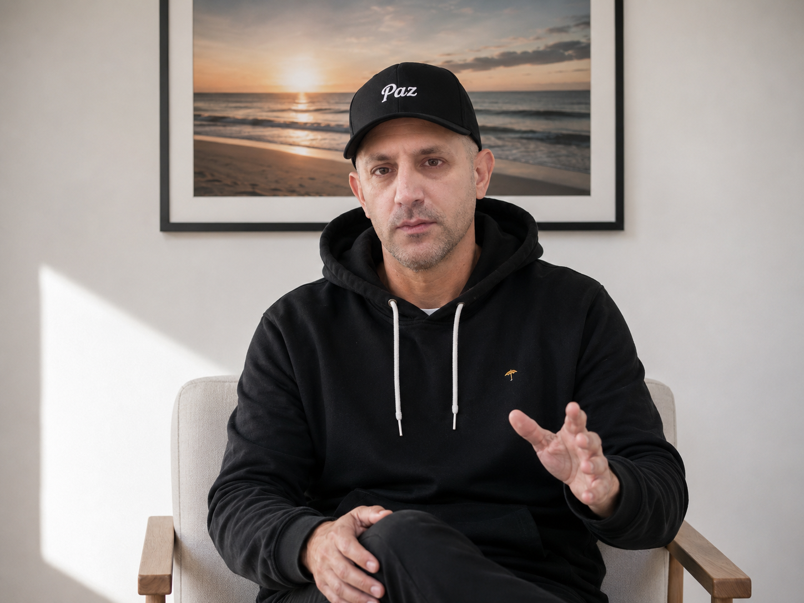

Durante años vi ingresar pacientes a diálisis.
La mayoría sabía perfectamente qué les hacía daño.
Y aun así...
seguían repitiéndolo.
CONCIENCIA · SALUD · PROPÓSITO
Despertar es comenzar a mirar tu vida de otra manera. Lo que cambia afuera, primero cambia adentro.
Despertar es el primer paso.

Un espacio para mirar la vida de otra manera, tomar conciencia y comenzar a transformar lo que importa.
No hay publicaciones todavía.
Un espacio para comprender tu salud renal, prevenir y tomar mejores decisiones.
No hay publicaciones todavía.
...el tiempo?
...el trabajo?
...el dinero?
...la rutina?
...el estrés?
...el gobierno?
...la economía?
...el clima?
¿Y si el verdadero problema fuera vivir en piloto automático?
La conciencia siempre llega antes que el cambio.
Para algunos, la salud es un número en la balanza.
Para otros, un porcentaje de grasa.
Para mí, la salud tiene otro significado.
La salud no consiste en tener un cuerpo perfecto.
Consiste en tener un cuerpo que todavía te permita vivir la vida que elegís.
La salud es poder pedirle energía a tu cuerpo...
y que todavía pueda responder.
Poder atarte los cordones.
Salir a caminar.
Correr detrás de tus hijos.
Subir una escalera sin pensar.
Viajar.
Abrazar.
Jugar.
Elegir.
Porque la verdadera salud no se trata de cuánto vivís.
Se trata de cómo podés vivir.
Lo que transforma tu vida es la dosis que repetís cada día.
—Cambia por lo que repetís.
La vida rara vez cambia por un solo acto.
La dosis de tu trabajo.
La dosis de tu descanso.
La dosis de tu alimentación.
La dosis de tu estrés.
La dosis de las personas que elegís tener cerca.
No existen alimentos que te salven.
No existen alimentos que te condenen.
Existe la conciencia con la que elegís cada dosis.
La calidad de tu vida será el reflejo de las dosis que elegís repetir.
Durante años vi ingresar pacientes a diálisis.
La mayoría sabía perfectamente qué les hacía daño.
Y aun así...
seguían repitiéndolo.
Ahí entendí que el problema no era la información.
Era la conciencia.
TIEMPO DE VIDA nació para responder una sola pregunta.
¿Por qué hacemos todos los días aquello que sabemos que nos hace mal?
Quizás llegaste buscando una respuesta.
Y descubriste que el verdadero cambio empieza mucho antes.
Empieza cuando dejamos de vivir en piloto automático.
Cuando recuperamos la capacidad de elegir.
Porque antes del cambio...
siempre aparece la conciencia.
Si sentís que este mensaje también habla de vos...
Será un gusto acompañarte.